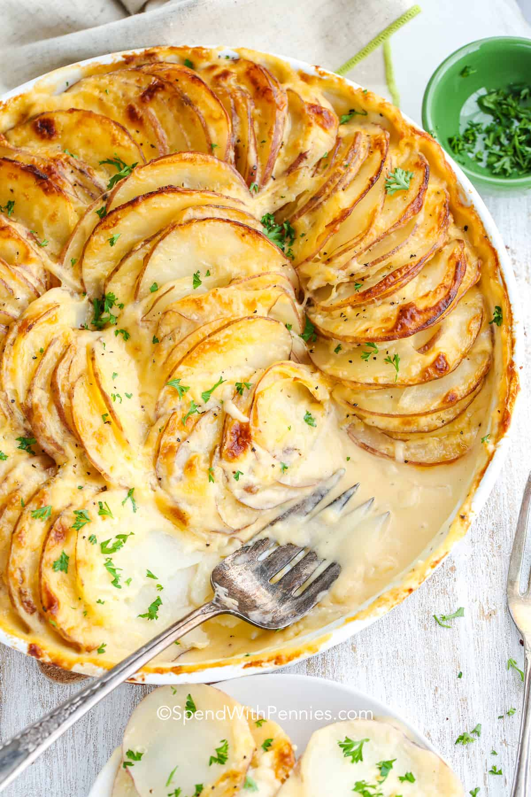

Gratin Recipe

Description
A beautiful potato casserole
ingredients
- Potatoes
- Cream
- cheese
- butter
- salt and pepper
- garlic
Steps
- Cream Mixture: Place butter, cream and garlic in a jug. Mix until combined.
- Preheat oven to 180°C/350°F (both fan and standard ovens).
- Slice potatoes: Peel the potatoes and slice them 1/8"/3 mm thick. Or use a slicer!
- Layer 1: Spread 1/3 of the potatoes in a baking dish (Note 3), then pour over 1/3 of the Cream Mixture, scatter with 1/3 of the salt, pepper and thyme. Sprinkle with 3/4 cups cheese.
- Layers 2 & 3: Repeat for the 2nd and third layer, but do not finish with cheese on the top layer (will add later).
- Cover & bake: Cover with lid or foil, and bake for 1 hr 15 min or until the potatoes in the middle are soft (use knife to test).
- Top with cheese, bake again: Remove foil, top with cheese. Bake for a further 10 to 15 minutes until golden and bubbly. Stand 5 minutes before serving.